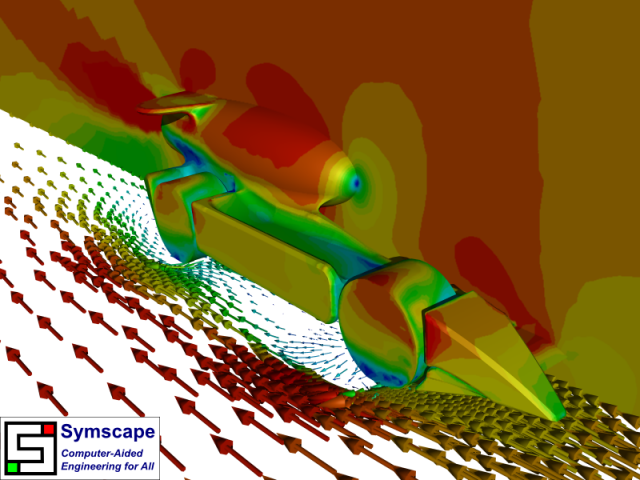

F1 in Schools Dragster CFD Analysis
F1 in Schools is an international competition for student teams (aged 9-19) to design, analyze, build, and race CO2 jet-powered cars (dragsters). Beyond promoting Formula 1 (F1) to the next generation of fans, F1 in Schools aims to give a flavor of running an F1 team by exposing students to finance, marketing, and engineering. Of course the most exciting area (as in F1) is engineering, where students get to use state-of-the-art 3D CAD/CAM software to design and build their dragsters. Performance optimization through analysis of the dragster design is also encouraged, which inevitably leads to Computational Fluid Dynamics (CFD).
 Basilisk Performance's 2008 CO2 Dragster
Basilisk Performance's 2008 CO2 Dragster
Background
Rules governing the design of the dragsters dictate dimensions and placement limits on various vehicle components such as wheels and the pressurized CO2 canister (propellant). In contrast to the extremely tight constraints on F1 teams, the rules for F1 in Schools permit a wide variation of designs as is evident at regional, national, and international events.
To give a sense of the size of the dragsters, consider that the chassis is 200 mm long and the wheels are 26 mm in diameter.
As in F1, aerodynamics plays a major role in determining the performance of a CO2 dragster. Unlike for F1 cars, the focus with CO2 dragsters is on minimizing drag for straight line speed, whereas in F1 the aim is to maximize downforce within tolerable drag levels.
Geometry
Basilisk Performance are an F1 in Schools team from Sebastopol College in Ballarat, Victoria, Australia. The team members are:
- Brett Sizeland - Design Engineer
- Aidan Cowie - Team Manager
- Ben Kersten - Resources Manager
- Warren Mahomet - Graphic Designer
Basilisk Performance Team
Brett Sizeland, the design engineer on the team, supplied a STEP geometry file representing their national final bound dragster (it was a half model exploiting the symmetry of the geometry) that he designed in CATIA. CFD analysis of the geometry was performed in Caedium using the Professional add-on.
Original Geometry
To perform a RANS Flow simulation in Caedium, the flow volume must represent the region filled with air around the geometry. The first step in the process was to import the STEP geometry file into Caedium. Then the extraneous geometry, such as the inner workings of the wheels, was deleted. Next, small gaps were filled and the geometry was simplified where necessary. Also missing geometry, such as the CO2 canister, was added to construct a new complete volume ready for combining with the box defining the extent of the flow domain around the dragster. Ideally at this stage it would be easier to subtract (Boolean operator) the new dragster volume from the outer box, but that proved too difficult due to the complexity of the model; instead the faces of the dragster and the outer boundary were stitched into a single volume, after ensuring that all shared face-edges were coincident.
Given the now watertight flow volume, the next step was to use the join tools in Caedium to suppress small faces (slivers) and small edges. This step ensures that the final mesh does not over resolve insignificant areas, thereby reducing the final cell count and reducing the time taken to obtain a flow solution.
Flow Volume Geometry
Physics
Brett provided the likely airflow conditions:
"The average speed of the car is roughly 80 km/h and I googled [a] CO2 canister and found that the pressure of the CO2 canister is roughly 7-8 MPa at a temperature of 20-30 C and the mass flow is 0.28 kg/s."
Based on these conditions, the CFD simulation in Caedium was configured with:
- Free-stream air speed and moving-ground speed = 22 m/s
- Wheel rotation speed = 16,307 rpm = 97,804 deg/s
- CO2 jet speed (assuming nozzle diameter = 4 mm) = 154 m/s
The dragster, its wheels, and the ground plane were specified as walls (impregnable by air). Additionally the wheels were assigned a rotational speed and the ground plane was configured with a linear speed matching the free-stream air speed. The sides and ceiling of the flow volume were specified as symmetry planes to simulate the other half of the flow volume and mimic free air. The upstream face was specified as an inlet and the downstream face was specified as an outlet.
Results
Two CFD simulations were performed, one assuming laminar flow, and the other assuming turbulent flow (using the k-omega SST turbulence model with wall functions). There was little difference between the two simulations, except the turbulent flow simulation converged more robustly. The results shown below are those from the turbulent flow simulation.
Front View of Velocity
Rear View of Velocity
Front View of Pressure
Rear View of Pressure
Front View of Streamlines
Rear View of Streamlines
Conclusion
As with all open wheel cars, F1 included, the airflow management around the wheels is crucial to maximize performance. The CFD results (especially the velocity arrows) for the dragster show that there might still be scope for improvements (i.e., drag reduction) around the wheels. Also a fairing, masking the gap between the CO2 canister and its housing, might help reduce drag by reducing the recirculation that currently occupies that area.
The 2009 Australian final for F1 in Schools will take place at the Melbourne F1 Grand Prix in March, 2010. Brett's Basilisk Performance team is almost ready to finalize their design aided by the insights revealed by the CFD results produced using Caedium. Keep up with Brett's design developments on the F1 in Schools Help thread in the F1 Technical Aerodynamic Forum.
Try For Yourself
The sym project file for this study can be viewed in Caedium or you can investigate this case yourself using our RANS Flow add-on.
The most convenient way to view and edit this case is to use our Professional add-on that combines all the add-ons used during this example.
Feedback
Questions? Ideas? Problems?

Comments
Next Installment
For the next installment of this design study see "F1 in Schools Dragster v2.0 CFD Analysis."
Cooperation
Hi
My name is hamed.
I'm a bachelor aerospace student in IRAN, Recently our teem decide to take apart in FSAE Italia 2013, It's about to design and constract a car same as F1 but in Student field.
before this we use fluent for our cfd test, but it's makes us so tired,
i come across with caedium and find it more easier and beter than fluent,
so if u can help us, we are became very thankfull and recocgnize this software to the most universities that we khnow
Regard